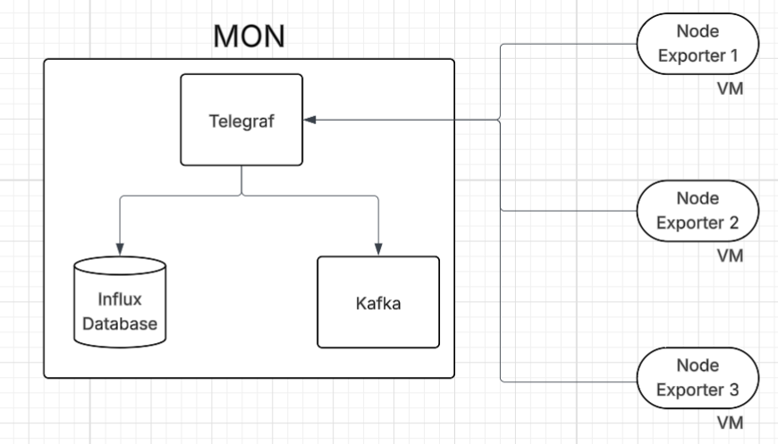
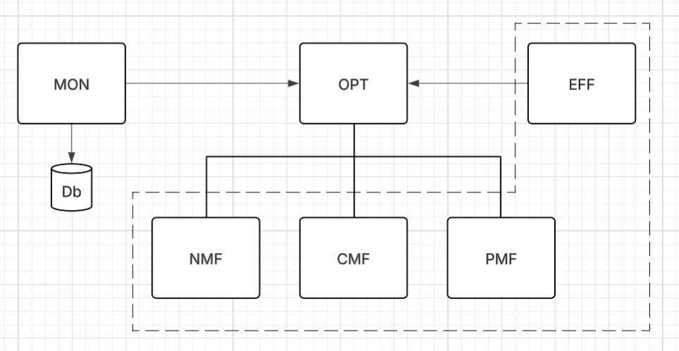

Desenvolvimento de uma ferramenta de monitorização dinâmica capaz de se adaptar automaticamente às mudanças da infraestrutura — integrando observabilidade adaptativa, injeção de falhas e análise inteligente com recurso a Machine Learning.
// Visão Geral
A provisão moderna de serviços assenta em computação distribuída e redes complexas dentro de datacenters. Garantir que um serviço sobrevive a falhas de hardware, picos de tráfego e quedas de conectividade é um desafio central para o engenheiro de computadores de hoje.
Recolha contínua e adaptativa de métricas de serviço, recursos e rede — sem reconfiguração manual quando a infraestrutura evolui. Suporta troca dinâmica de componentes, desacoplando a recolha de dados da visualização.
Testes controlados de robustez e resiliência usando chaos engineering, perturbações de rede e geração de tráfego, para validar o comportamento dos serviços em condições adversas e identificar casos de uso críticos.
Uso de técnicas de Machine Learning e LLMs (Llama, Mistral, Deepseek) para correlacionar dados, detetar anomalias, gerar relatórios automáticos e identificar a causa raiz de problemas de desempenho.
Observação contínua de métricas de serviço, utilização de recursos e desempenho em nós distribuídos do datacenter via Prometheus e NetData.
Ajuste dinâmico de alocação de recursos em resposta a variações de carga, com API de controlo exposta via FastAPI.
Minimização do consumo energético com gestão preditiva de recursos e métricas de energia através de Scaphandre e Kepler.
Deteção proativa e mitigação de violações de SLA através de monitorização contínua de limiares e protocolos de resposta automatizados.
Identificação assistida por ML de padrões anómalos usando TensorFlow/PyTorch antes de escalarem para disrupções de serviço.
Separação entre recolha de dados e visualização, permitindo a troca dinâmica de componentes de infraestrutura sem downtime.
Conteúdo temporário para validar layout 4x2. Será substituído por nova funcionalidade.
Bloco provisório apenas para verificar alinhamento, espaçamento e simetria da grelha.
// Contexto Internacional
Este projeto trabalha com infraestrutura de ponta atualmente utilizada em grandes projetos europeus de investigação.
// Stack Tecnológico
Conjunto de tecnologias open-source recomendadas no enunciado do projeto e consideradas para a futura implementação da prova de conceito.
// Publicações & Documentos
Apresentações, relatórios técnicos e documentação produzidos ao longo do projeto.
// Media
Documentação visual do projeto, incluindo capturas de ecrã e apresentações gravadas.


// Equipa
Orientadores
Contribuidores
Grupo de Estudantes